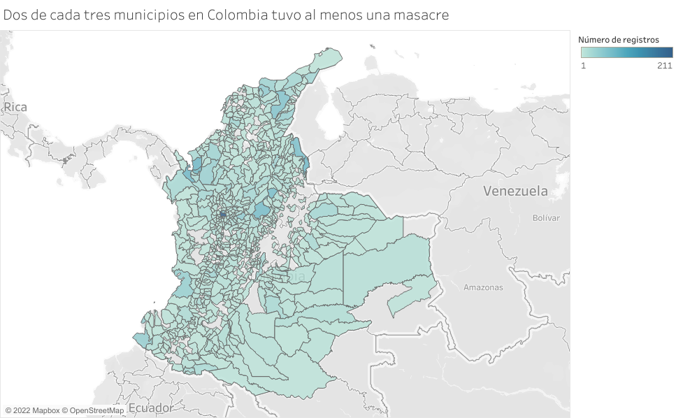
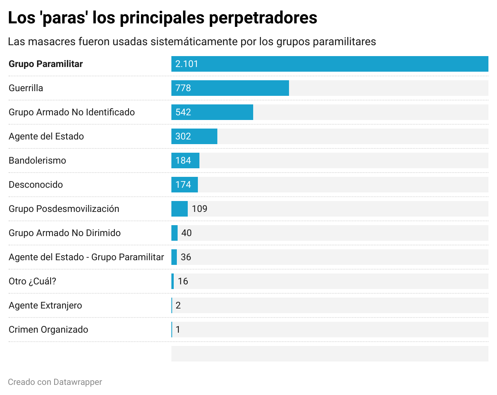

Introduction
Massacres increase, specially in the Magdalena Medio region. Colombian Army use the name of group MAS to perpetrate thoses crimes, specially in the counties of Puerto Boyaca and Cimitarra, where there was a big amount of left moviments of farmers
(here it is a map and a graphic with the increase of massacres)President Betancur release several guerrila leaders from jail and starts talk peace, specially with the groups M-19 and FARC. Cartel de Medellin create the groupe MAS to fight guerrillas. Colombia army take the name to perpetrate Masacres.
A investigation of the Colombian Attourney shows that more than 150 people, from which at least 60 were active military members
After the publication or the investigation, colombian army, bussisnesman, politician and big farmers, create paramilitary schools where civilians learn to kill
Colombia army start to interact in different ways with the new paramilitary groups
 